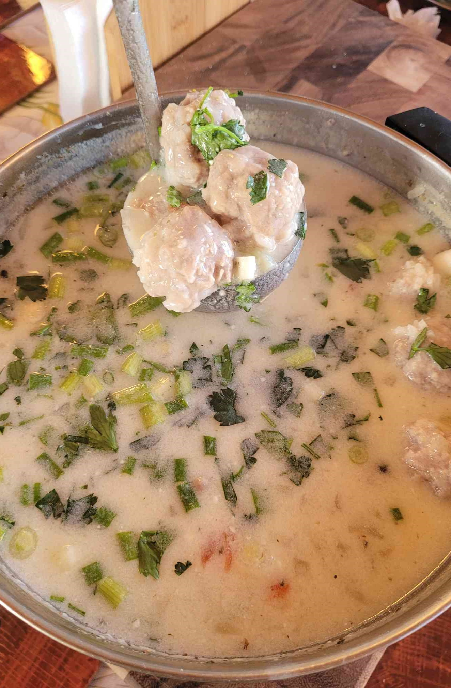

Ingredients
- 1/2 G - Water
- 1 whole - Onion, diced
- 1/2 lb - 70% 30% ground pork and beef mix
- 1/2 cup - rice
- 1/2 cup - flour
- 2 - potatoes, diced
- To Taste - tomato, diced
- To Taste - pepper, diced
- To Taste - Salt
- 1 tsp - Chubletsa (Bulgarian spice)
- 1 pinch - Peppercorns
- 1 cup - plain yogurt
- 1 - egg
- To Taste - fresh parsley
Steps
- Combine water, onion, and a tsp of salt in a soup pot and boil
- In a separate boil, combine ground meat mix and rice
- Roll meat into 1/2 inch meat balls and coat in flour
- Boil soup until yellow
- While in a rolling boil add the balls to the soup one at a time
- Add the potatoes, tomatoes, pepper, chubletsa, peppercorns and let boil until the potates
are almost done, about 20 min
- Remove from heat and allow to cool slightly
- In a separate bowl, mix yogurt and egg until creamy
- Add a ladle of soup into the mixture and slowing combine the mixture into the pot of soup
while stirring, Don't break up the the egg like in egg drop soup
- Top with parsley and serve
Notes
- The mix can also be 100% ground pork